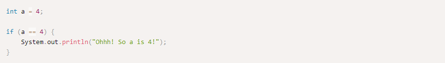

Conditionals
Java uses boolean variables to evaluate conditions. The boolean values true and false are returned when an
expression is compared or evaluated. For example:
Of course we don't normally assign a conditional expression to a boolean. Normally, we just use the short version:

Boolean operators
There aren't that many operators to use in conditional statements and most of them are pretty straight forward:
if - else and between
The if, else statement in Java is pretty simple.
And we can also add an else statement after an if, to do something if the condition is not true
The if - else statements doesn't have to be in several lines with {}, if can be used in one line, or without the {},
for a single line statment.
Although this method might be useful for making your code shorter by using fewer lines, we strongly recommend for
beginners not to use this short version of statements and to always use the full version with {}. This goes to every
statement that can be shorted to a single line (for, while, etc).
The ugly side of if
There is a another way to write a one line if - else statement by using the operator ? :
Again, we strongly recommend for beginners not to use this version of if.
= = and equals
The operator = = works a bit different on objects than on primitives. When we are using objects and want to check if they are equal, the operator == will say if they are the same, if you want to check if they are logically equal, you should use the equals method on the object. For example: